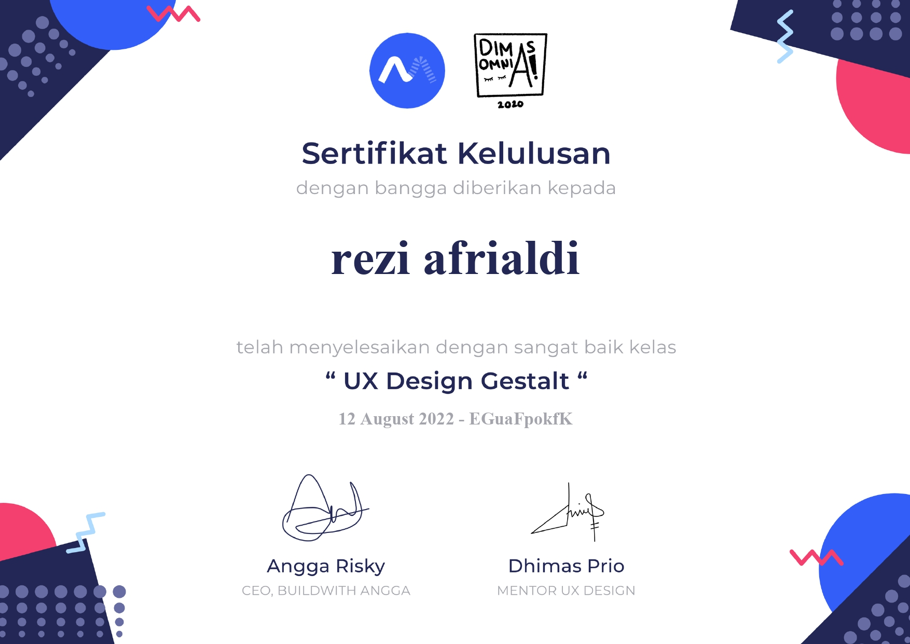

Hello,
Saya Rezi Afrialdi
Saya Merupakan Mahasiswa Teknik Informatika, Universitas Maritim Raja Ali Haji dan Saya sangat suka mendesign yaitu UI/UX dan juga Design Grafis

Saya Merupakan Mahasiswa Teknik Informatika, Universitas Maritim Raja Ali Haji dan Saya sangat suka mendesign yaitu UI/UX dan juga Design Grafis

FishStore App

Furniture Website

Mental Health App
Ideation UI/UX Competition - ITEBA 2022
BWA - UX Gestalt Principle